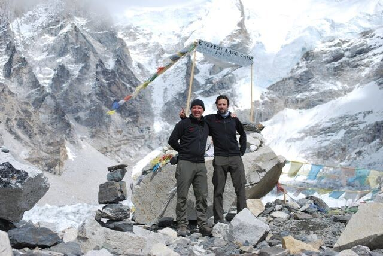
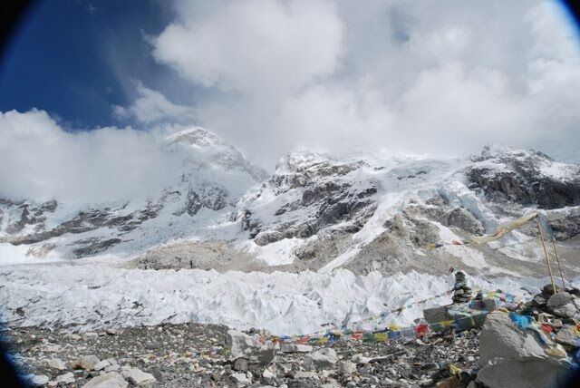
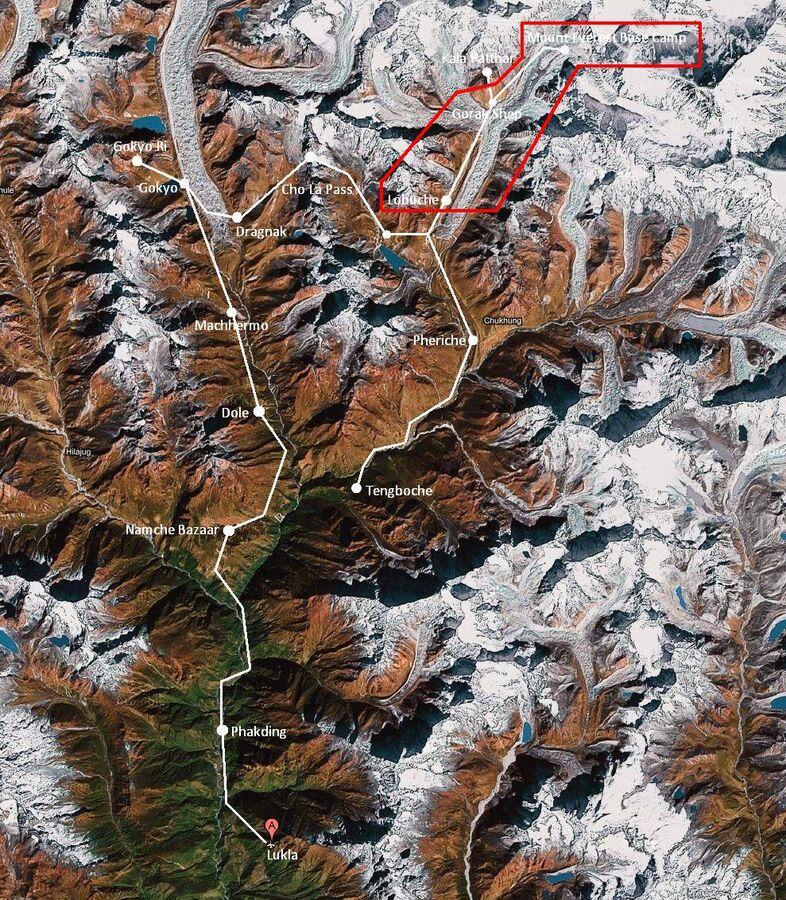

Heute ging es zu dem großen Ziel der Reise: Zum Mount Everest. Zunächst jedoch mussten wir unsere Zelte in Lobuche abbrechen und auf 5.130m nach Gorak Shep wandern. Es war zwar nur eine Strecke von rd 3 Std., aber die kam mir wie eine Ewigkeit vor. Es ging zwar insgesamt nur 230 Höhenmeter hoch, dafür aber immer bergauf und bergab. Und wir durchschritten ein Gletschergebiet, insofern gab es wieder viele Felsbrocken.

Endlich angekommen aßen wir ein wenig und machten uns dann zusammen mit Jakob, einem einsamen Trekker aus Bielefeld, auf den Weg zum Base Camp am Fuße des Mount Everest. Die Strecke dauerte rd. 2 Std. und führte uns an vielen interessanten Bergen vorbei. Der Weg führte hauptsächlich an einen Gletscher entlang, d.h. wir liefen auf der Spitze der Seitenmuräne.

Dann bog der Weg plötzlich in die Mitte des Gletschers ab, denn dort ist der offizielle Ort des Base Camp. Aber zu sehen war da nicht viel. Klar, der Gletscher und die Berge sind schon Klasse. Aber der Mount Everest lag - so wie leider oft - in Wolken eingehüllt. Es war ja auch schon Nachmittag. Noch weiter am Berg befindet sich derzeit übrigens das Basislager einer Expedition des indischen Militärs, die in den kommenden Tagen zum Gipfel des Mount Everest wollen.

Wir machten also einige Fotos, bestaunten die grandiose Umgebung und gingen dann wieder zurück. So ein Gletscher sieht übrigens wie eine lange Schutthalde aus. Wenn man näher hinschaut erkennt man, dass nur knapp unterhalb der Schuttoberfläche dickes Eis ist.
War es auf dem Hinweg noch warm gewesen, kühlte es sich auf dem Rückweg sehr schnell ab.
Wieder zurück in der Lodge saßen wir noch zusammen und spielten Karten. Nach dem Abendessen verzogen wir uns schnell auf unsere Zimmer, weil wir alle müde waren und morgen um 6.00h der Kala Patthar zu besteigen ist.
